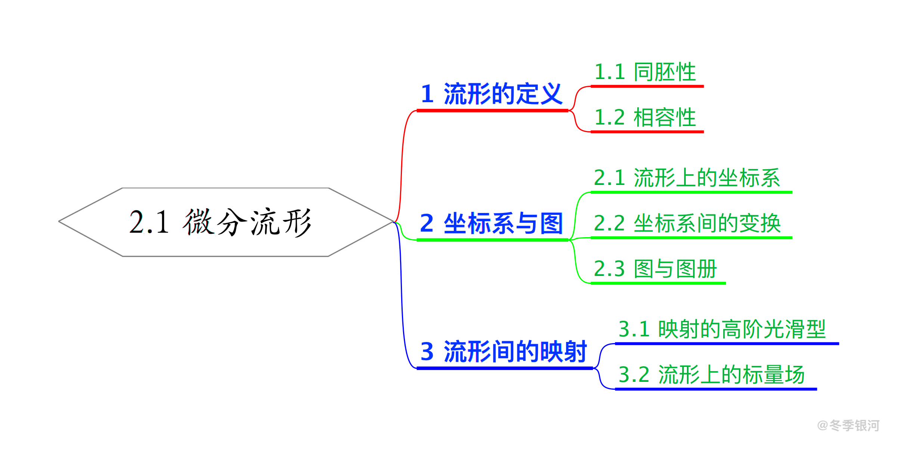

流形的基本概念
本文最后更新于：April 30, 2021 pm
本来是在看《物理学中的群论》中的第四章的, 奈何实在看不懂里面对李群的介绍, 于是开始看梁灿彬的《微分几何入门与广义相对论》中册的附录中关于李群的部分. 不得不说, 有微分几何基础的话看这部分相当的舒畅. 看的过程中顺带复习了一些关于微分几何的基本概念.
这篇文章对应《微分几何入门与广义相对论》第 2.1 节的内容.

1 基本概念
首先给出流形的定义:
- 微分流形:
对于拓扑空间 $M$, 若其有开覆盖 $\left\{ O_\alpha \right\}$ (即 $M = \bigcap_{\alpha} O_\alpha$) 满足下列条件, 则可称为 $n$ 维微分流形, 或简称 $n$ 维流形:- $\forall\ O_\alpha$, $\exists$ 拓扑同胚映射 $\psi_\alpha: O_\alpha \to V_\alpha$ ($V_\alpha$ 是用通常拓扑衡量的开子集);
- 若 $O_\alpha \cap O_\beta$, 则复合映射 $\psi_\beta \circ \psi_\alpha^{-1}$ 是 $C^{\infty}$ 光滑的;
粗略地说, $n$ 维流形是带有微分结构的拓扑空间, 其局部地像 $\mathbb{R}^n$ (体现在可以局部地构建该集合与 $\mathbb{R}^n$ 的同胚关系), 但整体不一定像 $\mathbb{R}^n$. 具体而言, 定义的第一条表明, 微分流形是由一片一片的开集构成的, 每一片 $n$ 维微分流形上的开集, 都可通过某种映射, 使得其与 $R^{n}$ 上的某个开集同胚. 而定义的第二条表明, 如果 $M$ 的两个开集有交, 则可诱导出一个 $R^{n}$ 的某个开区域到 $R^{n}$ 的另一开区域的映射, 这个映射按照通常在数学分析中的定义是 $C^{\infty}$ 的.
2 坐标系与图
由于流形上每一片开集都可和 $\mathbb{R}^n$ 上的某个开区域对应, 因此可以借助这个开区域定义坐标系:
- 流形上的坐标系:
设映射 $\psi_\alpha: O_\alpha \to \psi_\alpha[O_\alpha] \subset \mathbb{R}^n$ 是流形上的某个开集 $O_\alpha$ 到 $\mathbb{R}^n$ 的某个开区域的拓扑同胚映射, 则任一 $p \in O_\alpha$ 自然地通过这个映射与 $n$ 个数对应, 称这 $n$ 个数是点 $p$ 对应的坐标, 称 $(O_\alpha, \psi_\alpha)$ 构成一个坐标系.
坐标系的取法往往不是唯一的. 试想流形上有交集的两个开区域 $O_\alpha$ 与 $O_\beta$, 其分别对应映射 $\psi_\alpha$ 与 $\psi_\beta$. 则在交集 $O_\alpha \cap O_\beta$ 中, 即可使用坐标系 $(O_\alpha, \psi_\alpha$, 也可使用坐标系 $(O_\beta, \psi_\beta)$. 于是同一个点对应两个 $\mathbb{R}^{n}$ 上的点, 由此可诱导出联系则两个点的一个的映射 (或者说 $n$ 个 $n$ 元函数):
称这个映射 (或者说 $n$ 个 $n$ 元函数) 为一个 坐标变换. 此外, 通常也将对应的 $n$ 个数 $\left\{ x^{\mu} \right\}$ 称为坐标系, 以及将坐标变换简记为:
接下来介绍数学上另一种看待坐标系的观点:
- 图:
坐标系 $(O_\alpha, \psi_\alpha)$ 在数学上又叫 图. 若图中的映射满足微分流形定义中对映射的要求, 则将这样的图的集合 $\left\{ (O_\alpha, \psi_\alpha) \right\}$ 称为 图册. 其中定义第二个要求又叫相容性条件, 因此图册中任意两个图都是相容的.
对于同一个微分流形, 可以两个图册并不一定是相容的, 此时说两个图册代表不同的 微分结构.
3 流形间的映射
流形与拓扑不同的是, 除了具有拓扑结构以外, 还具有微分结构 (可以视为通过 $\mathbb{R}^n$ 上的函数来间接体现的). 对于流形间的映射, 除了一般的连续性以外, 还可谈论高阶的连续性. 具体定义如下:
- 流形间映射的连续性:
设 $f: M \to M’$ 是流形间的映射, 则可诱导出一个多元函数 $\psi’_\beta \circ f \circ \psi_\alpha^{-1}$ ($\psi’_\beta$ 与 $\psi’_\alpha$ 分别是 $M’$ 与 $M$ 上的坐标系). 若对于任意 $p \in M$, 该多元函数是 $C^{r}$ 的, 则称映射 $f$ 是 $C^{r}$ 类映射.
类似与之前定义的拓扑同胚, 这里可以定义微分同胚, 反映两个流形微分结构的一致性:
- 微分同胚:
若存在 $f: M \to M’$, 满足:- $f$ 是一一到上的;
- $f$ 及 $f^{-1}$ 是 $C^{\infty}$ 的;
则称 $f$ 是 $M$ 到 $M’$ 的微分同胚映射, 且称 $M$ 与 $M’$ 互为微分同胚.
流形间的映射 $f: M \to M’$ 有一个特例, 即 $M’$ 为 $\mathbb{R}$ 的情形, 此时流形 $M$ 的每一点都对应着一个实数, 由此可引出第一个关于 “场” 的概念:
- 流形上的标量场:
称映射 $f: M \to \mathbb{R}$ 为流形 $M$ 上的 函数, 或 $M$ 上的 标量场. 若 $f$ 为 $C^{\infty}$ 的, 则称该标量场是 光滑的. 将 $M$ 上全体光滑标量场的集合记为 $\mathscr{F}_{M}$ 或 $\mathscr{F}$.
本博客所有文章除特别声明外，均采用 CC BY-NC-SA 4.0 协议 ，转载请注明出处！